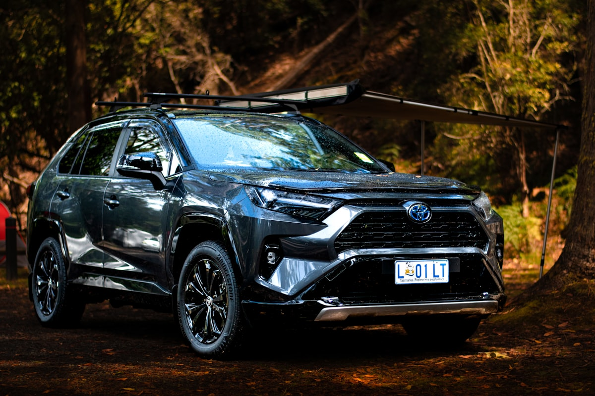

Ключі Toyota в Ужгороді — дублікат, виготовлення, програмування

Виготовляємо ключі Toyota для всіх моделей — від простих механічних ключів TOY43 до smart-ключів з H-чіпом (DST-AES) на Camry V70, RAV4 XA50, Land Cruiser 200/300. Маємо обладнання Autel IM608 та Lonsdor K518ISE — стандарт для роботи з сучасними Toyota.
Потрібен ключ Toyota?
Зателефонуйте — скажемо точну ціну та чи є потрібна заготовка
З якими моделями Toyota ми працюємо
- Toyota Camry (V40, V50, V70)
- Toyota Corolla
- Toyota RAV4
- Toyota Land Cruiser 100 / 200 / 300
- Toyota Land Cruiser Prado 120 / 150
- Toyota Highlander
- Toyota Avensis
- Toyota Auris
- Toyota Yaris
- Toyota Hilux
- Toyota C-HR
Ціни на ключі Toyota в Ужгороді
| Послуга | Ціна | Час |
|---|---|---|
| Дублікат механічного ключа TOY43 / TOY48 | від 1500 грн | 30 хв |
| Викидний ключ з чіпом 4D70 / G-chip | від 2200 грн | 45–60 хв |
| Smart-ключ з H-chip (DST-AES) | від 3800 грн | 1–2 год |
| Програмування при повній втраті ключів | від 3500 грн | 1–3 год |
| Заміна корпусу smart-key | від 700 грн | 15 хв |
| Перепрошивка blade (заміна леза) | від 800 грн | 30 хв |
* Точна вартість залежить від моделі, року випуску та комплектації. Уточнюйте по телефону.
Чому Seven Keys для Toyota?
- Працюємо з усіма Toyota від 1998 року до 2025
- Підтримка G-chip (DST80) та H-chip (DST-AES)
- Прив'язка через OBD-II — без розборки авто
- Чіпи 4D70, 4D72, G, H — у наявності
- Корпуси Camry, RAV4, Prado — на складі
- Працюємо з Toyota з американського ринку (USA)
Як замовити ключ Toyota
- Зателефонуйте і назвіть модель, рік випуску та VIN (бажано)
- Ми перевіримо наявність заготовки і назвемо точну ціну
- Приїжджайте до майстерні (вул. Фединця 39, Ужгород) або викликайте майстра з обладнанням
- Виготовляємо і програмуємо ключ при вас — у середньому за 1–2 години
- Перевіряємо роботу: запуск, центральний замок, кнопки
Часті запитання про ключі Toyota
Чи можете зробити smart-ключ для Toyota Camry V70 (2018+)?
Так. Camry V70 має H-chip (DST-AES). Дублікат — від 3800 грн, при повній втраті — від 5500 грн через складніший протокол прив'язки.
Скільки коштує дублікат ключа для Toyota Land Cruiser Prado 150?
Smart-ключ з G-chip для Prado 150 — від 3000 грн з програмуванням. Корпуси оригінал/аналог є в наявності.
Чи можна додати ключ до Toyota без втрати робочого?
Так. Усі ваші робочі ключі залишаться функціональними після додавання нового.
Що робити, якщо втрачені всі ключі від Toyota?
Ми зчитуємо PIN-код з блоку імобілайзера через OBD або з ECU, генеруємо новий ключ і прив'язуємо. Для більшості моделей — від 3500 грн.
Чи робите ключ для Toyota з американського ринку?
Так. Часто американські Toyota мають інший чіп або частоту 315 МГц замість європейської 433 МГц — у нас є відповідні корпуси і модулі.
Не знайшли свою модель?
Працюємо з усіма Toyota — зателефонуйте, підкажемо рішення